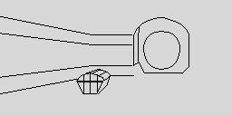
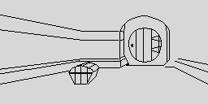
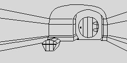
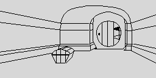
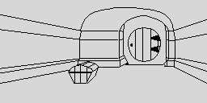
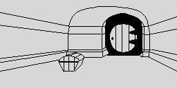
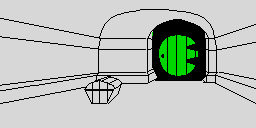
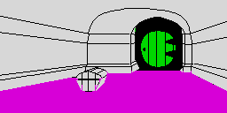
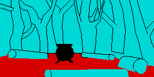

| How a picture is drawn |
A picture is not stored as pixels. It is a program of a few hundred ops -- move the pen, draw a line, flood-fill, paint colours -- for RUN_PICTURE, which draws it into the top 128 scanlines of the screen while the game does nothing else. This page follows the first picture a game shows, tunnel like hall (Bag End), op by op through the game's own interpreter, times every op in every picture, and draws the one picture the game changes as it runs, both ways.
DRAW_LOCATION_PICTURE looks the location up in PICTURE_TABLE and hands the stream to RUN_PICTURE, which walks it with IY and tests each op in this order (read):
| Op | Bytes | Does |
|---|---|---|
| header | 2 | the border colour, and the attribute the canvas starts as (CLEAR_CANVAS) |
| $00 | 1 | the end |
| $08 x y | 3 | move the pen |
| bit 7 set | 2 | a line (DRAW_LINE): bits 0-2 its direction (bit 0 the vertical axis leads, bit 1 down, bit 2 left), the second byte's bits 0-5 its length less one, and the minor-axis step -- one step every n pixels -- split between the first byte's bits 2-5 and the second's bits 6-7 |
| bit 6 set | 3 | a flood fill (FLOOD_FILL) in the ink of bits 0-2, from x, y; the pen does not move |
| bit 5 set | 3+ | paint attribute cells: bits 0-2 the colour, then an attribute address, high byte first, then path bytes of two bits of direction and six of count, to $FF |
x runs 0-255 across and y 0-127 up from the bottom of the canvas; a stream that draws before it moves starts at (127, 63). Every pixel plotted also sets its cell's ink (PLOT_PIXEL), flipped if it would be the paper's colour, so a line is never invisible. The 22 pictures, with the ops each stream holds and how long the game took to draw it here:
| Location | Name | Stream | Bytes | Lines | Moves | Fills | Paints | Drawing |
|---|---|---|---|---|---|---|---|---|
| 1 | tunnel like hall | LOC1_TUNNEL_LIKE_HALL_PIC | 564 | 162 | 68 | 6 | 1 | 6.7 s |
| 49 | great river | LOC49_GREAT_RIVER_PIC | 315 | 104 | 25 | 6 | 1 | 6.5 s |
| 6 | trolls path | LOC6_TROLLS_PATH_PIC | 668 | 244 | 46 | 13 | 0 | 11.7 s |
| 11 | narrow place | LOC11_NARROW_PLACE_PIC | 281 | 85 | 27 | 5 | 1 | 6.3 s |
| 37 | dragons desolation | LOC37_DRAGONS_DESOLATION_PIC | 590 | 187 | 56 | 15 | 0 | 1.8 s |
| 43 | smooth straight passage | LOC43_SMOOTH_STRAIGHT_PASSAGE_PIC | 350 | 142 | 20 | 1 | 0 | 0.3 s |
| 38 | dale valley | LOC38_DALE_VALLEY_PIC | 535 | 150 | 63 | 6 | 2 | 5.6 s |
| 7 | trolls cave | LOC7_TROLLS_CAVE_PIC | 638 | 192 | 50 | 26 | 3 | 1.5 s |
| 24 | forest gate | LOC24_FOREST_GATE_PIC | 465 | 141 | 52 | 8 | 0 | 2.4 s |
| 35 | lake town | LOC35_LAKE_TOWN_PIC | 691 | 185 | 100 | 6 | 0 | 8.2 s |
| 13 | goblins dungeon | LOC13_GOBLINS_DUNGEON_PIC | 278 | 70 | 43 | 2 | 0 | 6.6 s |
| 31 | dark dungeon | LOC31_DARK_DUNGEON_PIC | 249 | 60 | 41 | 1 | 0 | 6.4 s |
| 5 | trolls clearing | LOC5_TROLLS_CLEARING_PIC | 700 | 248 | 57 | 7 | 1 | 3.1 s |
| 28 | levelled elvish clearing | LOC28_LEVELLED_ELVISH_CLEARING_PIC | 607 | 218 | 51 | 2 | 1 | 2.7 s |
| 4 | lonelands | LOC4_LONELANDS_PIC | 124 | 35 | 15 | 2 | 0 | 11.5 s |
| 32 | elvenkings cellar | LOC32_ELVENKINGS_CELLAR_PIC | 618 | 216 | 52 | 9 | 0 | 2.0 s |
| 16 | big goblins cavern | LOC16_BIG_GOBLINS_CAVERN_PIC | 778 | 284 | 52 | 17 | 0 | 1.3 s |
| 25 | bewitched gloomy place | LOC25_BEWITCHED_GLOOMY_PLACE_PIC | 592 | 215 | 40 | 11 | 1 | 6.4 s |
| 8 | running river | LOC8_RUNNING_RIVER_PIC | 517 | 190 | 34 | 5 | 2 | 6.3 s |
| 41 | lower halls | LOC41_LOWER_HALLS_PIC | 446 | 132 | 36 | 16 | 1 | 10.3 s |
| 26 | spider threads place | LOC26_SPIDER_THREADS_PLACE_PIC | 485 | 175 | 35 | 4 | 2 | 8.1 s |
| 39 | front gate | LOC39_FRONT_GATE_PIC | 373 | 114 | 16 | 13 | 4 | 10.4 s |
126.1 s of drawing in all. Two streams do not end: the last private op of location 13's and of location 5's takes the next picture's two header bytes as its operands and runs on into it (13 into 31; 5 into 28), so each of those is another picture with a few more ops first.
DRAW_LOCATION_PICTURE run for location 1 on a game at its first prompt, with a probe at $7FBC, the top of RUN_PICTURE's loop, taking the canvas each time an op begins -- so each picture below is the canvas after the ops named, with the time they took. Clearing the canvas came first: 0.03 s. Then 230 moves and lines, shown in 4 pictures, and each fill and paint on its own:
Ops 1-58 ($CC45): 9 moves, 49 lines. 0.12 s.

Ops 59-116 ($CCC2): 45 lines, 13 moves. 0.10 s.

Ops 117-174 ($CD43): 28 moves, 30 lines. 0.11 s.

Ops 175-230 ($CDD3): 38 lines, 18 moves. 0.07 s.

Op 231 ($CE55): 1 fill: black from 191, 81. 0.02 s.
Op 232 ($CE58): 1 fill: black from 191, 67. 0.02 s.

Op 233 ($CE5B): 1 fill: black from 196, 80. 0.01 s.
Op 234 ($CE5E): 1 fill: black from 196, 68. 0.00 s.

Op 235 ($CE61): 1 fill: black from 156, 68. 0.89 s.

Op 236 ($CE64): 1 paint: green from row 7, column 19. 0.00 s.

Op 237 ($CE73): 1 fill: magenta from 127, 24. 5.37 s.
The outline is almost free; the fills are the picture's time. The Locations page has every picture animated at the speed the game draws it.
The same run, the T-states from each op's start to the next's, by kind:
| Op | How many | T-states | Time | Share | Each |
|---|---|---|---|---|---|
| clear | - | 97,946 | 0.03 s | 0.4% | 97,946 |
| move | 68 | 8,636 | 0.00 s | 0.0% | 127 |
| line | 162 | 1,406,601 | 0.40 s | 6.0% | 8,682 |
| fill | 6 | 22,075,750 | 6.31 s | 93.5% | 3,679,291 |
| paint | 1 | 9,100 | 0.00 s | 0.0% | 9,100 |
| end | 1 | 151 | 0.00 s | 0.0% | 151 |
And the same over all 22 pictures:
| Op | How many | T-states | Time | Share | Each |
|---|---|---|---|---|---|
| clear | - | 2,167,055 | 0.62 s | 0.5% | 2,167,055 |
| move | 979 | 124,333 | 0.04 s | 0.0% | 127 |
| line | 3549 | 29,909,318 | 8.55 s | 6.8% | 8,427 |
| fill | 181 | 408,843,178 | 116.81 s | 92.7% | 2,258,802 |
| paint | 20 | 156,222 | 0.04 s | 0.0% | 7,811 |
| end | 22 | 3,322 | 0.00 s | 0.0% | 151 |
Inside the ops, the time is in addressing. Every instruction of Bag End's drawing, its T-states put down to the routine it is in (probed at every instruction):
| Routine | T-states | Share |
|---|---|---|
| PIXEL_ADDRESS | 12,282,716 | 52.0% |
| FLOOD_FILL | 3,632,751 | 15.4% |
| PLOT_PIXEL | 3,068,600 | 13.0% |
| PIXEL_SET | 1,820,885 | 7.7% |
| INC_Y | 1,641,443 | 7.0% |
| DEC_Y | 534,912 | 2.3% |
| DRAW_LINE | 240,275 | 1.0% |
| INC_X | 176,185 | 0.7% |
DRAW_LINE and FLOOD_FILL step their point a pixel at a time, so they always know where the next pixel is -- and then PIXEL_ADDRESS works its screen address out again from x and y, rotating the mask into place one bit at a time. The fill does it for every pixel it tests (PIXEL_SET), above, below and beside the sweep, as well as for every pixel it plots, and keeps its queue of seeds on the machine stack.
The patch on Patches keeps every algorithm and every seed and carries the address and mask along with the point instead, working them out from scratch only where a line or a sweep begins; then it takes the fill's own bookkeeping down too. Nine times faster over the 22 pictures, and the same pixels.
The same measurement with the patch from Patches laid over the same machine (its ranges copied from the patched snapshot the build makes): the ops are the same ones, at the same places in the stream, and the finished canvas is identical to the original's. Only the lines and fills get faster: the moves, the paints and clearing the canvas are untouched code.
| Op | Original | Patched | Faster by |
|---|---|---|---|
| clear | 0.03 s | 0.03 s | 1.0x |
| move | 0.00 s | 0.00 s | 1.0x |
| line | 0.40 s | 0.21 s | 1.9x |
| fill | 6.31 s | 0.31 s | 20.5x |
| paint | 0.00 s | 0.00 s | 1.0x |
| the whole picture | 6.74 s | 0.55 s | 12.2x |
The one picture the game changes. On the tape the first two bytes of location 5's stream are $00 $00: black border, black paper, black ink: night. When day dawns and the trolls turn to stone, TROLLS_TURN_TO_STONE writes $05 $28: cyan border, cyan paper, black ink, and START (NEW_GAME) writes the night back before every game. The drawing is the same; drawn both ways here by DRAW_LOCATION_PICTURE, the second with the two bytes the dawn writes:
By night, as the tape has it: the lines come out white, because black ink on black paper is flipped by PLOT_PIXEL.

By day, after the dawn: the same ops on cyan.
Location 5's stream runs on into location 28's -- levelled elvish clearing -- so the clearing is that picture with the trolls' ops first, and its colour bytes are the only ones in the game with a writer.